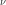
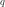
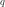
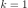
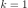
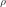

The Metropolis-Hastings Algorithm¶
 -algebra
-algebra  on
on
 , a Markov chain is a process
such that
, a Markov chain is a process
such thatAn example is the random walk for which where the steps are independent and identically distributed.
 is measurable;
is measurable; is a probability
distribution on .
is a probability
distribution on .
The kernel  has density
has density  if
.
if
.
if
. on with
initial distribution  (that is ): denotes the probability distribution of the Markov
Chain ;
denotes the probability distribution of the Markov
Chain ; denotes the probability distribution of
denotes the probability distribution of  ();
();- denotes the mapping defined by for all .
is said to converge in total variation distance towards
the distribution  if
ifThen the notation used here is  .
.
be a (target)
distribution on , then a transition kernel
is said to be:- -invariant if ;
- -irreducible if, such
that
 ,
holds.
,
holds.
Markov Chain Monte-Carlo techniques allows to sample and integrate
according to a distribution which is only known up to a
multiplicative constant. This situation is common in Bayesian statistics
where the “target” distribution, the posterior one
, is proportional
to the product of prior and likelihood: see equation (1).
In particular, given a “target” distribution and a
-irreducible kernel transition , the
Metropolis-Hastings algorithm produces a Markov chain
of distribution with the
following properties:
the transition kernel of the Markov chain is
-invariant;- ;
the Markov chain satisfies the ergodic theorem: let
 be
a real-valued function such that
, then, whatever the
initial distribution is:
be
a real-valued function such that
, then, whatever the
initial distribution is:
In that sense, simulating amounts to
sampling according to and can be used to integrate relatively
to the probability measure . Let us remark that the ergodic
theorem implies that
 almost surely.
almost surely.
By abusing the notation,  represents, in the remainder of
this section, a function of
represents, in the remainder of
this section, a function of  which is proportional to the PDF
of the target distribution . Given a transition kernel
of density , the scheme of the Metropolis-Hastings
algorithm is the following (lower case letters are used hereafter for
both random variables and realizations as usual in the Bayesian
literature):
which is proportional to the PDF
of the target distribution . Given a transition kernel
of density , the scheme of the Metropolis-Hastings
algorithm is the following (lower case letters are used hereafter for
both random variables and realizations as usual in the Bayesian
literature):
- Draw
 and set .
and set . - Draw a candidate for according to the given transition
kernel :
 .
. - Compute the ratio .
- Draw ; if
 then set
then set
 , otherwise set .
, otherwise set . - Set and go back to 1).
Of course, if is replaced by a different function of
which is proportional to it, the algorithm keeps unchanged, since
only takes part in the latter in the ratio
. Moreover, if proposes
some candidates in a uniform manner (constant density ), the
candidate is accepted according to a ratio
 which reduces to the previous “natural” ratio
of PDF. The introduction of
in the ratio prevents from the bias of a
non-uniform proposition of candidates which would favor some areas of
.
The -invariance is ensured by the symmetry of the expression of
(-reversibility).
In practice, is specified as a random walk
( such that ) or as a
independent sampling (
such that ) or as a
independent sampling ( such that
), or as a mixture of random walk and
independent sampling.
such that
), or as a mixture of random walk and
independent sampling.
-irreducibility. Moreover, for efficient convergence,
has to be chosen so as to explore quickly the whole support
of without conducting to a too small acceptance ratio (the
ratio of accepted candidates ). It is usually
recommended that this latter ratio is about  but such a
ratio is neither a warranty of efficiency, nor a substitute to a
convergence diagnosis.
but such a
ratio is neither a warranty of efficiency, nor a substitute to a
convergence diagnosis.API:
Examples:
References:
- Robert, C.P. and Casella, G. (2004). Monte Carlo Statistical Methods (Second Edition), Springer.
- Meyn, S. and Tweedie R.L. (2009). Markov Chains ans Stochastic Stability (Second Edition), Cambridge University Press.